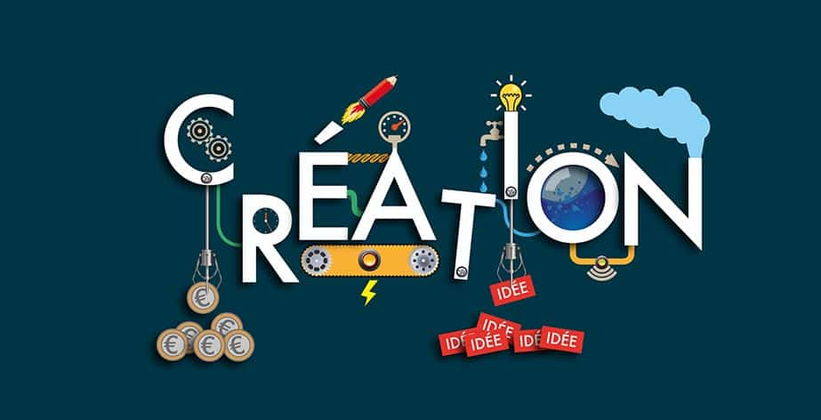

La démarche de création d’une entreprise s’effectue en plusieurs étapes indispensables. Les équipes de petite-entreprise.net font le point et vous offrent leurs conseils pour vous permettre d’ouvrir une entreprise dans les meilleures conditions.
Votre idée à beau être bonne et originale, vous ne pouvez pas vous lancer pour autant sans passer par quelques étapes préliminaires. Et notamment la réalisation d’une étude de marché. Celle-ci est le point de départ de tout projet de création d’entreprise.
Quelques supports : COURS